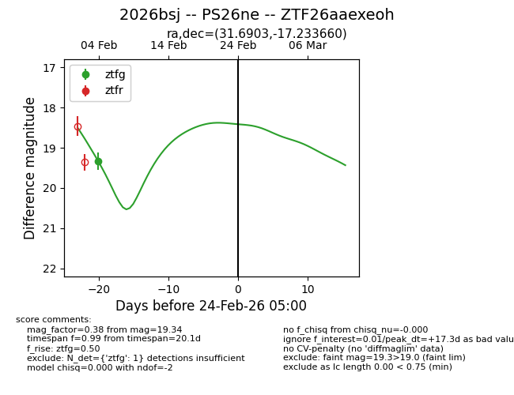
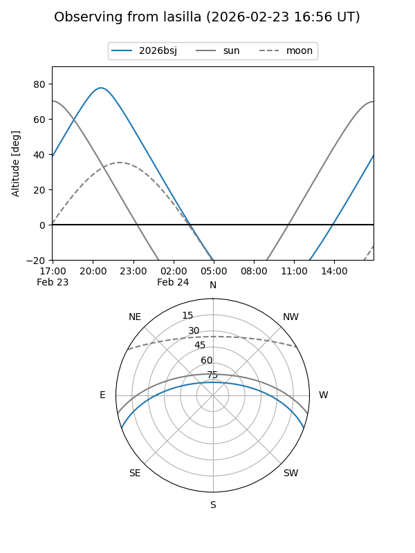
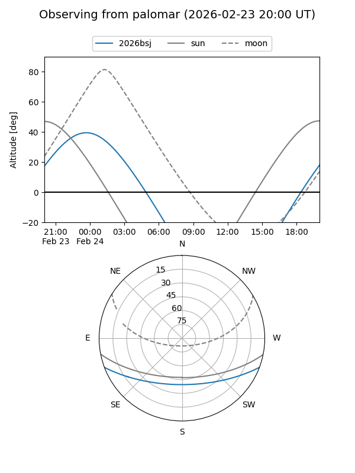

2026bsj
Target 2026bsj at 2026-02-24 09:08
Aliases and brokers:
FINK: link
Lasair: link
ALeRCE: link
TNS: link
YSE: link
alt names
ZTF26aaexeoh (ztf,fink_ztf)
2026bsj (tns,yse)
PS26ne (panstarrs)
Coordinates:
equatorial (ra, dec) = 31.6903,-17.23366
equatorial (HMS+DMS) = 02:06:45.68,-17:14:01.18
galactic (l, b) = (187.2080,-69.98919)
Flags:
Photometry:
last ztfg=19.34
1 ztfg detections
Lightcurve

Visibility


Additional plots